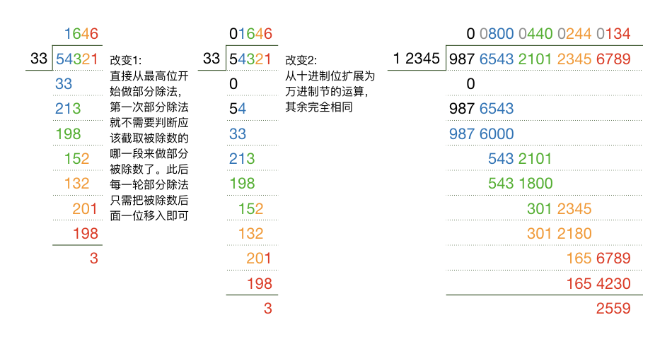

4.1.5. 高精度整数算法(IV) 除法及取余¶
除法和取余是两个姐妹运算，二者的运算过程完全一样，不同的只是取哪一个结果而已。它们俩也都是高精度整数算法中常用的运算，也是编程实现难度相比最高的运算。
4.1.5.1. BigInt除法运算¶
我们先看看十进制整数除法的竖式运算是怎样的。例如我们要计算54321/33=1646…3，那么我们首先从被除数54321的最高位5开始寻找第一段比33大的部分，我们可以找到(54)就比33大，所以就从54开始逐位向后进行部分除法，最终得到结果。这个过程想必是大家已经非常熟练的了。
我们的算法要模拟这样一个过程，有一个地方需要按照计算机的习惯来稍微改造一下。就是在第一次部分除法的时候，人眼可以快速地找到第一个大于除数33的部分，即54，但计算机软件则没有这么聪明，它必须从最高位5开始和33比较大小，如果小了那就再添一位再比大小，这个过程有点小麻烦。对这个步骤有两种改造方法。由于第一段比除数大的部分肯定至少和除数位数相同，至多比除数多一位，所以我们可以根据除数的长度，先取相同长度的一段进行比较，如果不行就再添一位，这样就可以了。第二种方法是我们干脆不要找了，直接从被除数的最高位单独一位开始做部分除法，这样最多就是商会多出若干个前导的零来，我们最后把它们去除就可以了。
看上去第二种方法有可能多做好几次比较运算，最后还要去除最高位上的若干个零。但是第二种方法可以让代码变得统一和简洁，而比较运算我们已经知道了，其实运行速度很快的，去除商最高位的前导零采用 vector 的 pop_back() 函数，速度也是极快的。所以在实际应用中第二种方法的速度比第一种并不会明显的降低，所以这里我们选择第二种方法。在把算法和程序代码理解清楚后，请自行尝试第一种方法。
然后我们把十进制的按位运算扩展为万进制的按节运算就可以了，方法上是完全一致的。请看一下图示的例子：
接下来我们来实现 BigInt 的除法运算，和乘法一样，一共两种，重载函数的原型分别如下：
struct BigInt {
// ...
BigInt operator/(const BigInt &a) const;
BigInt &operator/=(const BigInt &a);
// ...
};
因为除法和乘法一样，也是不能直接在被除数本身上进行运算的，所以我们也是采用先实现普通的 / 运算，然后利用它来实现 /= 运算。
除法的过程相对复杂，容易引起思维混乱和引入bug，我们在开始编码之前先还是理一理思路。先看看我们需要哪些变量：
被除数是
*this，它可以直接访问内部成员变量_s，但由于整个函数是有const后缀修饰的，所以不能修改；除数是形参
a，它是常引用，也不能修改；我们需要生成一个临时的
BigInt q用于计算商。因为我们知道商的长度不大于被除数的长度，所以我们可以在计算开始前将其设为与被除数相同长度并且全零。我们显然还需要一个临时的
BigInt part用来存放每一次部分除法的部分被除数。
下面是除法的实现代码：
BigInt BigInt::operator/(const BigInt &a) const
{
BigInt q;
if (a.zero()) throw "divided by zero"; // 除数为0，抛出异常
if (zero()) return q; // 特判：被除数为0，直接返回0
q._s.resize(_s.size(), 0); // 预留商最多所需的节数，初始全0，商的长度最多和被除数相等
BigInt part; // 用做部分除的被除数
int i = _s.size(); // 当前部分除进行到的位置
while (--i >= 0) { // 从最高节到最低节进行部分除，进入循环时i已经指向本次部分商应在的位置
// 1. 取本次部分被除数，就是将被除数的当前节添加进part
if (part.zero()) part = _s[i];
else part._s.insert(part._s.begin(), _s[i]);
// 2. 用多次减法模拟部分除，减到part小于除数为止
while (part >= a) {
part -= a;
++q._s[i]; // 每减一次，部分商就加1
}
}
while (q._s.size() > 1 && q._s.back() == 0) q._s.pop_back();
return q;
}
BigInt &BigInt::operator/=(const BigInt &a) { return *this = *this / a; }
注解
还记得那个
throw命令吗？不记得的话可以回到顺序表这一节去看一看，那里有简单的介绍。要记住C++中所有的顺序容器，包括数组、vector等等都是从0开始计数的，用来指示当前部分除法所处位置的变量
i在进入循环前的初始值_s.size()是指向被除数最高节后面的那个位置的。因此在循环的条件表达式里我们使用了前置--运算，这样第一次循环条件判断的时候它已经指向了被除数的最高节，循环也就相应地从最高节开始进行部分除了，同时每一次部分除的商也就顺理成章的由i来指示所在位置，即q._s[i]。整个过程中i会始终跟随进度准确地指向合适位置，直到位置0，也就是最低节也完成了部分除，再一次循环条件判断时，i先完成减一，变成了-1，循环随之结束。进入循环前，把
part设为0。在以后的计算过程中，part在每次部分除结束后保留的是余数，所以当某次部分除发生整除时，part也会变成0。每一次部分除，首先把被除数当前位置的节
_s[i]移入part的最低位，和前一次的余数拼接成这一次的被除数。这个过程要分为两种情况：一是part不为0的情况，这时候把_s[i]的值插入到part._s的首个元素位置即可；二是part为0时，应该直接把part._s[0]设置为_s[i]的值，否则就会出现part表示的部分被除数有一个多余的前导0，会给后面的运算带来不必要的麻烦。部分除要做的是两个
BigInt变量的除法part / a，这就出现了用自己来实现自己的问题，所以我们不是真正地去做除法，而是用多次循环减法来模拟这一次除法：循环地做part - a直至part < a，每减一次，对应的部分商加1，减了多少次就加了多少个1。由于我们事先把q设为了全0，所以这个循环可以保证得到正确的部分商，如果part一开始就小于a的话，这个循环根本不会被执行，部分商也就保持为0。可以看出这个过程是准确而完备的。最后不要忘记删除
q中多余的前导0。
高精度算法这种本身比较复杂，又涉及许多编程中的语言运用技巧的代码，在阅读的时候务必用几个具体的数字手工模拟运行一下。在看懂之后，务必要自己手打一遍，测试一下。
4.1.5.2. BigInt取余运算¶
除法运算搞定之后，取余就自然搞定了。其实我们已经看到了，除法运算时那个用来存放部分被除数的临时变量 part，在整个除法运算结束之后里面存放的就是余数，把它返回出来就OK了，就这么简单！整个过程和除法完全一样，而且我们现在已经不需要计算商了，所以在运算过程中不需要那个保存商的变量 q。另外我们把变量 part 改名为 r，表示余数（remainder）。
取余运算符重载为成员函数的原型：
struct BigInt {
// ...
BigInt operator%(const BigInt &a) const;
BigInt &operator%=(const BigInt &a);
// ...
};
取余运算的具体函数定义代码这里就不单独给出了，因为我们接下来将把整个 BigInt 的代码完整地展示出来，整整四节的成果：
4.1.5.3. BigInt结构的完整代码¶
#include <string>
#include <iostream>
#include <iomanip>
#include <vector>
using namespace std;
struct BigInt {
static const int _BASE = 10000; // 基，每个节的数值范围为0-9999
static const int _WIDTH = 4; // 节数码宽度，每节4个十进制数码
vector<int> _s; // 用于存放数值的节向量，小端序存放
// 内部功能函数
void _assign(unsigned long long value);
void _assign(const string &str);
// 构造器
BigInt(unsigned long long value = 0);
BigInt(const string &str);
// 辅助功能函数
bool zero() const; // 判断是不是等于0
// 赋值运算
BigInt &operator=(unsigned long long value);
BigInt &operator=(const string &str);
// 加法运算
BigInt &operator+=(const BigInt &a);
BigInt operator+(const BigInt &a) const;
BigInt &operator++(); // 前置++
BigInt operator++(int); // 后置++
// 乘法运算
BigInt operator*(const BigInt &a) const;
BigInt &operator*=(const BigInt &a);
// 减法运算
BigInt &operator-=(const BigInt &a);
BigInt operator-(const BigInt &a) const;
BigInt &operator--(); // 前置--
BigInt operator--(int); // 后置--
// 比较运算
bool operator<(const BigInt &a) const;
bool operator>(const BigInt &a) const;
bool operator<=(const BigInt &a) const;
bool operator>=(const BigInt &a) const;
bool operator==(const BigInt &a) const;
bool operator!=(const BigInt &a) const;
// 除法运算
BigInt operator/(const BigInt &a) const;
BigInt &operator/=(const BigInt &a);
// 取余运算
BigInt operator%(const BigInt &a) const;
BigInt &operator%=(const BigInt &a);
};
// 输入输出流运算不能重载为成员函数，只能重载为普通函数
ostream &operator<<(ostream &os, const BigInt &bi);
istream &operator>>(istream &is, BigInt &bi);
// 以下为函数定义。算法编程中通常函数定义放在main()函数的后面，工程编程中函数定义往往写在另一个单独的程序文件里
ostream &operator<<(ostream &os, const BigInt &bi)
{
int i = bi._s.size();
os << bi._s[--i];
while (--i >= 0)
os << right << setw(4) << setfill('0') << bi._s[i];
return os;
}
istream &operator>>(istream &is, BigInt &bi)
{
string str;
is >> str;
bi._s.clear();
bi._assign(str);
return is;
}
void BigInt::_assign(unsigned long long value) {
_s.push_back(value % _BASE);
while (value /= _BASE)
_s.push_back(value % _BASE);
}
void BigInt::_assign(const string &str) {
int p = str.size(), h, v;
if (p == 0)
_s.push_back(0);
else
while (p > 0) {
h = p >= _WIDTH ? p - _WIDTH : 0;
v = 0;
while (p > h) v = v * 10 + str[h++] - '0';
_s.push_back(v);
p -= _WIDTH;
}
while (_s.size() > 1 && _s.back() == 0) _s.pop_back();
}
BigInt::BigInt(unsigned long long value) { _assign(value); }
BigInt::BigInt(const string &str) { _assign(str); }
bool BigInt::zero() const { return _s.size() == 1 && _s[0] == 0; }
BigInt &BigInt::operator=(unsigned long long value)
{
_s.clear();
_assign(value);
return *this;
}
BigInt &BigInt::operator=(const string &str)
{
_s.clear();
_assign(str);
return *this;
}
BigInt &BigInt::operator+=(const BigInt &a)
{
if (_s.size() < a._s.size()) // 把长度调整到不短于a，方法是在高位补0
_s.resize(a._s.size(), 0); // 使用vector容器的resize成员函数一次性补足
int carry = 0, i = 0; // carry：进位数，初始为0
while (i < _s.size()) { // 循环到所有节全部计算完为止
_s[i] += (i < a._s.size() ? a._s[i] : 0); // a有可能比自己更短
_s[i] += carry; // 加上从前面来的进位
carry = _s[i] / _BASE; // 本节产生的进位
_s[i] %= _BASE; // 本节的和
i++; // 进入下一节
}
if (carry) _s.push_back(carry); // 最后有可能还有一次进位，要进成更高的一节
return *this;
}
BigInt BigInt::operator+(const BigInt &a) const
{
BigInt temp = a; // 生成一个临时的BigInt变量等于加数a
return temp += *this; // 直接返回temp加上自身之后的值
}
BigInt &BigInt::operator++() { return *this += 1; }
BigInt BigInt::operator++(int)
{
BigInt temp = *this;
*this += 1;
return temp;
}
BigInt BigInt::operator*(const BigInt &a) const
{
BigInt p; // 积
if (zero() || a.zero()) return p; // 特判
int size1 = _s.size(), size2 = a._s.size();
int d1, d2, carry;
p._s.resize(size1 + size2, 0); // 将积的节数设置为最大可能，初始值全部为0
for (d2 = 0; d2 < size2; ++d2) { // 乘数从最低到最高各节循环
if (a._s[d2] == 0) continue; // 乘数遇到等于0的节，直接跳到下一节
carry = 0; // 开始一轮部分乘，进位数清零
for (d1 = 0; d1 < size1; ++d1) { // 自己从最低到最高各节循环
p._s[d2+d1] += (a._s[d2] * _s[d1]);// 乘数的节号同时是本次部分积的左移量
p._s[d2+d1] += carry; // 加上从前面来的进位
carry = p._s[d2+d1] / _BASE; // 新的进位数
p._s[d2+d1] %= _BASE; // 从该节中去除进位部分
}
if (carry) p._s[d2+d1] = carry; // 最后有可能还有一次向更高位的进位
}
while (p._s.size() > 1 && p._s.back() == 0) p._s.pop_back();
return p;
}
BigInt &BigInt::operator*=(const BigInt &a) { return *this = *this * a; }
BigInt &BigInt::operator-=(const BigInt &a)
{
if (a.zero()) return *this; // 特判，减数为0的情况
while (_s.size() < a._s.size()) _s.push_back(0); // 补齐被减数的长度
_s.push_back(1); // 被减数最高位上在增加一个节，以应对小数减大数的情况
for (int i = 0; i < a._s.size(); i++) { // 从低到高开始逐节相减
_s[i] -= a._s[i]; // 对应的节相减
if (_s[i] < 0) { // 借位
int j = i; // 准备从低向高逐节去找最近那个能借出一个1的节
while (_s[++j] == 0) _s[j] = _BASE - 1; // 循环直到真正借到位
_s[j]--; // 被借走一个1
_s[i] += _BASE; // 加上借到的位
}
}
// 去除被减数被增加的位并清除高位上的0
do { _s.pop_back(); } while (_s.size() > 1 && _s.back() == 0);
return *this;
}
BigInt BigInt::operator-(const BigInt &a) const
{
BigInt temp = *this;
return temp -= a;
}
BigInt &BigInt::operator--() { return *this -= 1; }
BigInt BigInt::operator--(int)
{
BigInt temp = *this;
*this -= 1;
return temp;
}
bool BigInt::operator<(const BigInt &a) const
{
if (_s.size() != a._s.size()) return _s.size() < a._s.size();
for (int i = _s.size() - 1; i >= 0; --i)
if (_s[i] != a._s[i]) return _s[i] < a._s[i];
return false;
}
bool BigInt::operator>(const BigInt &a) const { return a < *this; }
bool BigInt::operator<=(const BigInt &a) const { return !(a < *this); }
bool BigInt::operator>=(const BigInt &a) const { return !(*this < a); }
bool BigInt::operator==(const BigInt &a) const { return _s == a._s; }
bool BigInt::operator!=(const BigInt &a) const { return _s != a._s; }
BigInt BigInt::operator/(const BigInt &a) const
{
BigInt q;
if (a.zero()) throw "divided by zero"; // 除数为0，抛出异常
if (zero()) return q; // 特判：被除数为0，直接返回0
q._s.resize(_s.size(), 0); // 预留商最多所需的节数，初始全0，商的长度最多和被除数相等
BigInt part; // 用做部分除的被除数
int i = _s.size(); // 当前部分除进行到的位置
while (--i >= 0) { // 从最高节到最低节进行部分除，进入循环时i已经指向本次部分商应在的位置
// 1. 取本次部分被除数，就是将被除数的当前节添加进part
if (part.zero()) part = _s[i];
else part._s.insert(part._s.begin(), _s[i]);
// 2. 用多次减法模拟部分除，减到part小于除数为止
while (part >= a) {
part -= a;
++q._s[i]; // 每减一次，部分商就加1
}
}
while (q._s.size() > 1 && q._s.back() == 0) q._s.pop_back();
return q;
}
BigInt &BigInt::operator/=(const BigInt &a) { return *this = *this / a; }
BigInt BigInt::operator%(const BigInt &a) const
{
BigInt r;
if (a.zero()) throw "divided by zero"; // 除数为0，抛出异常
if (zero()) return r; // 特判：被除数为0，直接返回0
// 模拟一次整数竖式除法，但不用保留商
int i = _s.size();
while (--i >= 0) {
if (r.zero()) r = _s[i];
else r._s.insert(r._s.begin(), _s[i]);
while (r >= a) r -= a;
}
return r;
}
BigInt &BigInt::operator%=(const BigInt &a) { return *this = *this % a; }
注意
高精度算法是算法编程普及组阶段的难点之一，涉及比较复杂的模拟算法，很容易考虑不周全引入bug；涉及比较复杂的C++模板容器的应用，对vector容器的应用要有相当的熟悉度；涉及到初步的C++面向对象编程，对成员变量、成员函数、静态成员、构造函数、函数重载、运算符重载等面向对象的概念要有所了解，虽然还只是用struct来模拟初级阶段的面向对象，但还是有许多概念要理解，有许多固定写法要记住。
不幸的是，高精度算法几乎是提高组的必考知识，普及组的难度越来越大，也不排除会出现在普及组的可能性。高精度算法难学难掌握，在考场上现场写一个极难在三次以内完全写准确，一定要自己完全理解，并多次动手实验才行。
幸运的是，在C++语言强大的vector容器、面向对象等高阶技能的加持下，现在写高精度已经比当年用纯C语言和数组来写简单了许多许多。而且实际的题目中如果要用到高精度算法，是极少出现要求我们完整地实现所有高精度运算的，而且往往会在数据取值范围方面有一定的限制，使得计算过程可以简化。后面一节我们就将见到这样一个实际的题目。